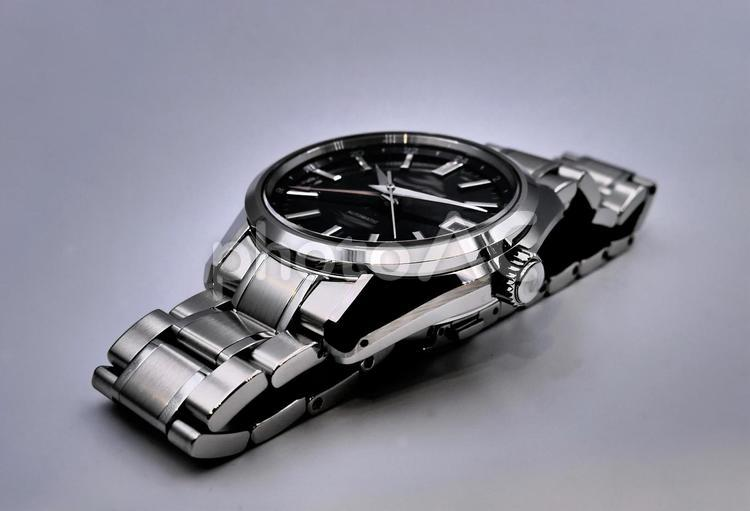

ヘリテージコレクションとはグランドセイコーのコレクションの1つで、グランドセイコーの顔ともいえるものになっています。スーツにもカジュアルにも使える万能なデザインをしています。ヘリテージコレクションのなかでも様々なデザインがありますが私が1番魅力的だと感じたものは、型番号SBGR317です。（下画像は参考）黒の文字盤にシンプルな綺麗な針が印象的になっています。この時計をしていると見た人に誠実そうな印象を与えることができると思います。

前のページ 次のページ